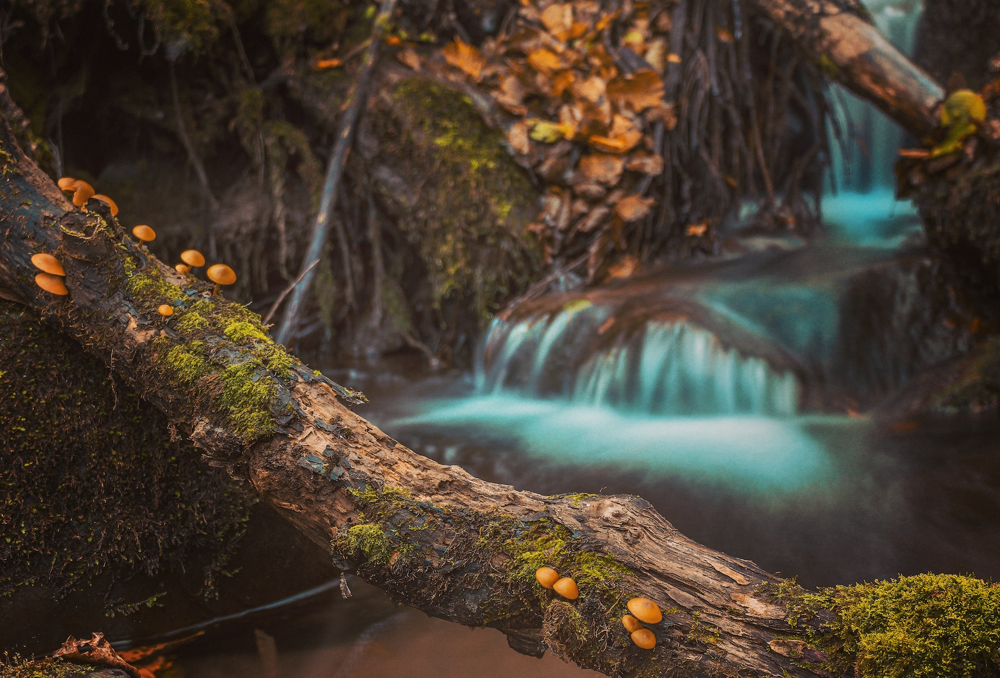
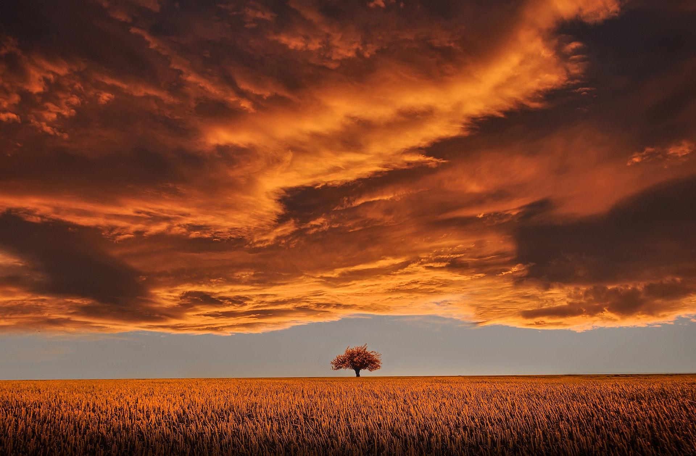
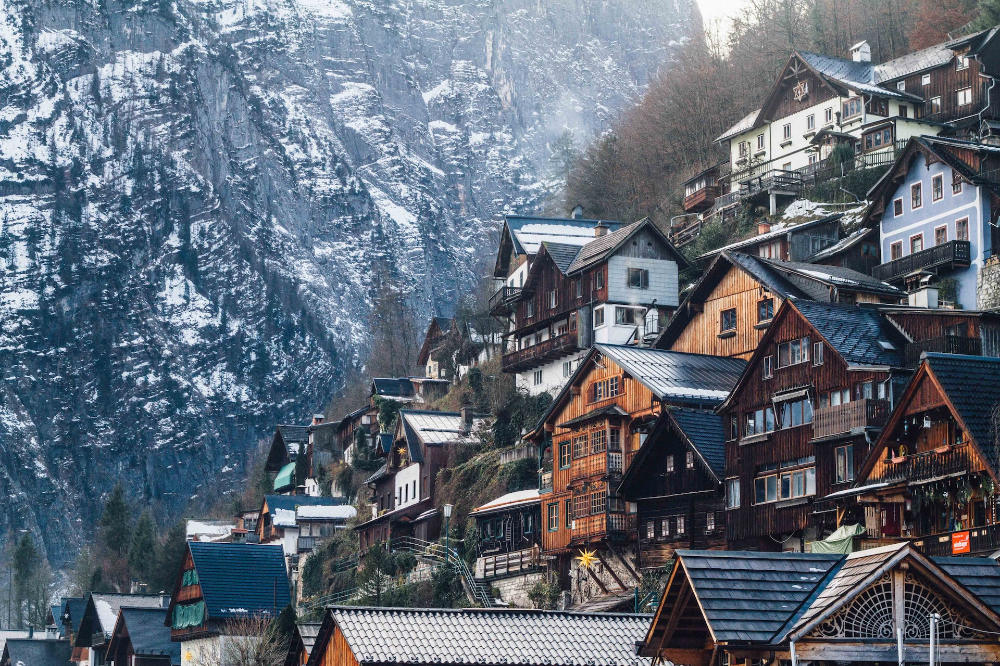
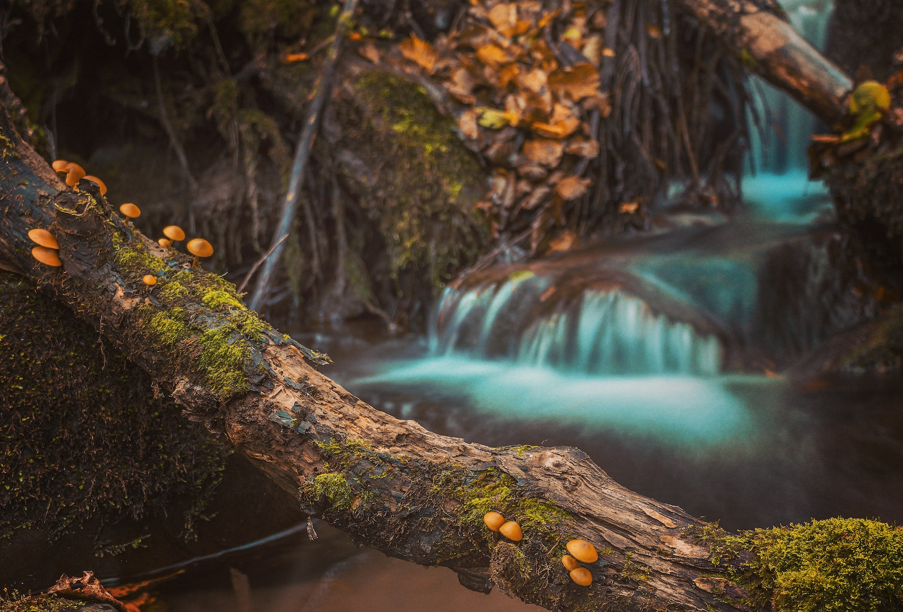
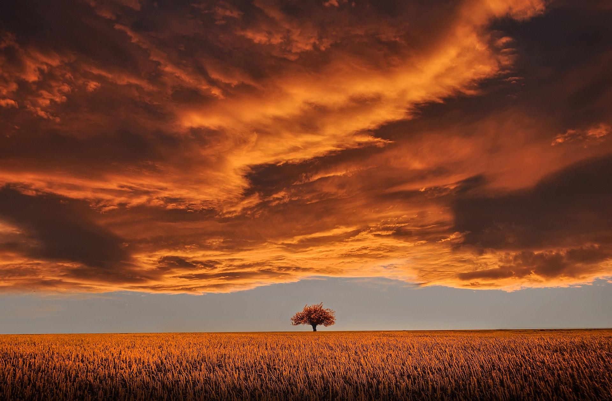
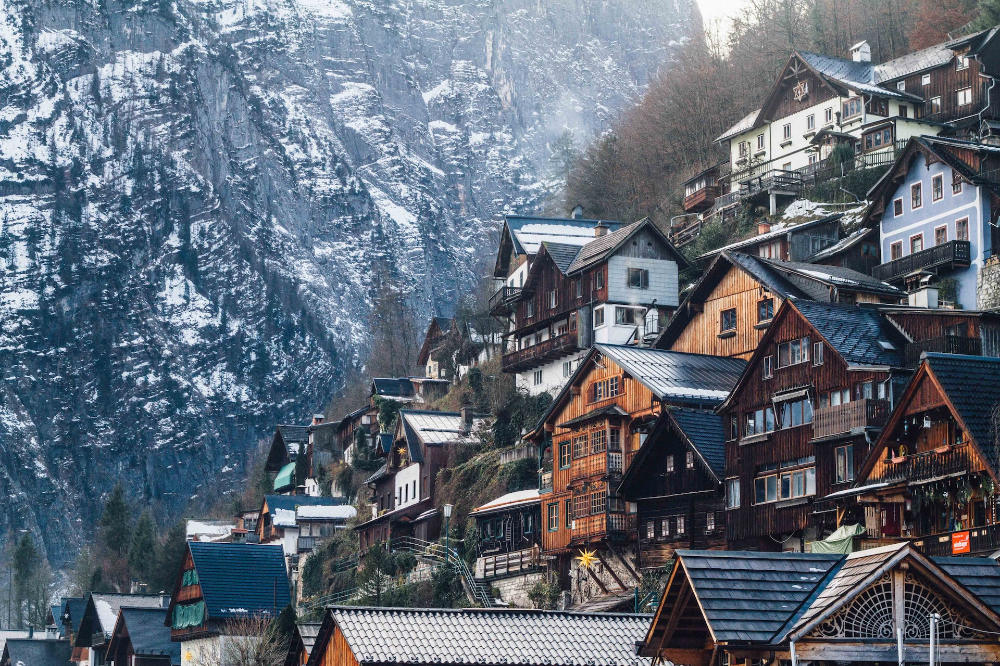

Summer
O verão é uma das quatro estações do ano, caracterizada por ser a estação mais quente. Neste período, as temperaturas permanecem elevadas e os dias são mais longos do que os dias das outras estações. Geralmente, o verão é também o período do ano reservado às férias
Veja maisspring
O outono é a estação do ano que sucede o verão e antecede o inverno. Nas regiões de clima temperado ou subtropical é caraterizado por queda gradativa na temperatura e pelo amarelar e início da queda das folhas das árvores, que indica a passagem das estações.
Veja maisautumn
O outono é a estação do ano que sucede o verão e antecede o inverno. Nas regiões de clima temperado ou subtropical é caraterizado por queda gradativa na temperatura e pelo amarelar e início da queda das folhas das árvores, que indica a passagem das estações.
Veja maisWinter
O inverno é a estação mais fria das quatro estações do ano e é comum que durante esta época, em países mais perto dos polos, as temperaturas fiquem abaixo de 0 ºC e que ocorram fenômenos como a queda de neve e a formação de geada.
Veja mais